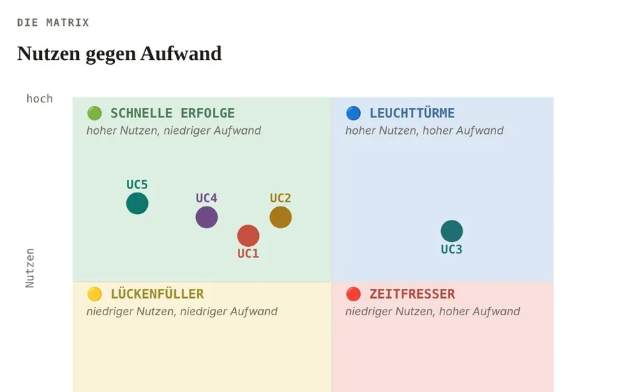
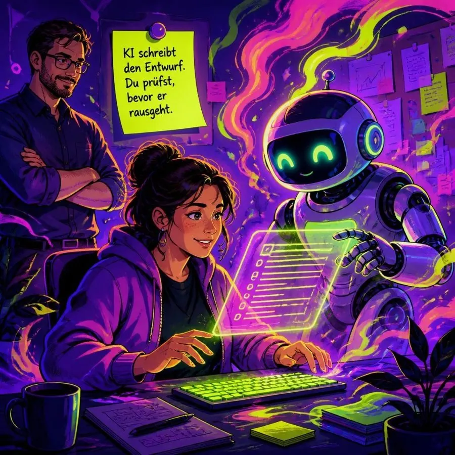
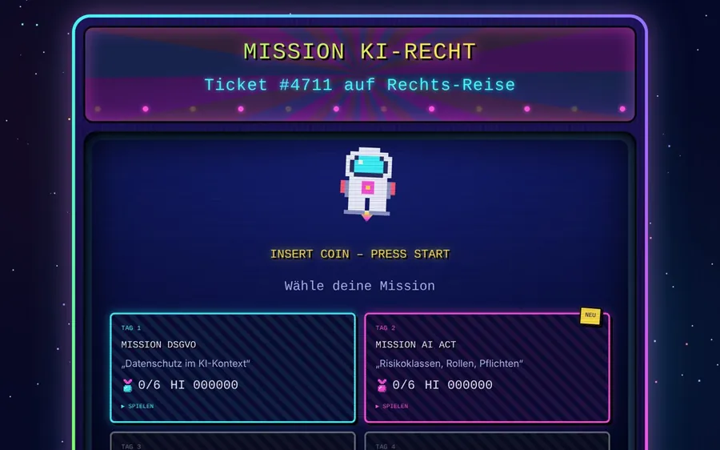
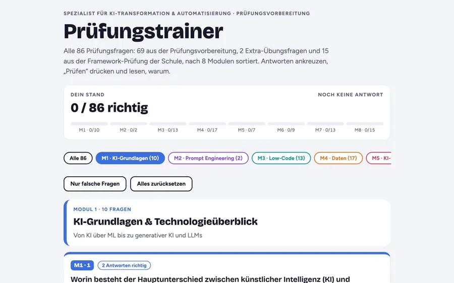
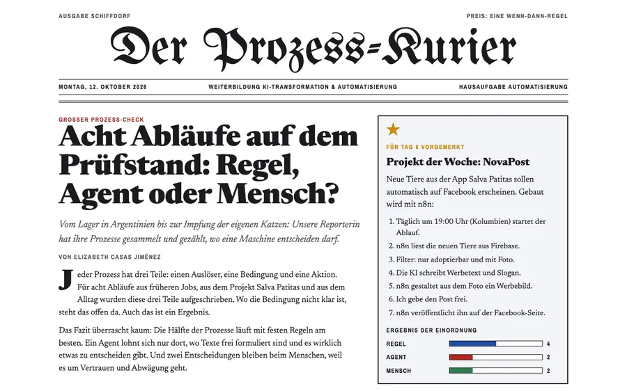

Verfügbar ab Januar 2027
Elizabeth
Casas Jiménez
Senior Business Analyst · Product Owner · KI-Transformation
Ich übersetze Geschäftsprobleme in KI-Lösungen, die Menschen wirklich nutzen, von der IST-Analyse bis zur Einführung.
Ich verbinde Fachbereich und Technik.
Ich bin Informatikingenieurin mit über 15 Jahren Erfahrung als Business Analystin und Product Owner, in Kolumbien, Argentinien und der Schweiz.
Ich höre zu, analysiere Prozesse, schreibe klare Anforderungen und sorge dafür, dass neue Lösungen bei den Menschen ankommen. Seit September 2026 mache ich eine Weiterbildung zur Spezialistin für KI-Transformation & Automatisierung.
15 Jahre BA & PO in E-Commerce, Medizintechnik, Luftfahrt, Individualsoftware-Entwicklung, ERP
KI-Projekte, die ankommen und sicher sind
Mein Fokus
- i.KI-Use-Cases finden, bewerten und priorisieren
- ii.Anforderungen und Backlogs für KI-Produkte
- iii.Change Management, damit Teams mitziehen
- iv.KI-Governance: EU AI Act und DSGVO von Anfang an
Kompetenzen aus 15 Jahren Praxis.
Requirements Engineering
IST-/SOLL-Analyse, User Stories, Use Cases, UML. Aus „wir brauchen KI“ werden klare, testbare Anforderungen.
Product Owner
Backlog priorisieren, Scrum leben, Increments liefern. Zertifiziert als Product Owner und Scrum Master.
Change & Stakeholder
Kotter, ADKAR, Bridges. Stakeholder, Betriebsrat und skeptische Teams früh einbinden.
Regulierte Umfelder
ISO 13485 aus der Medizintechnik, dazu EU AI Act und DSGVO aus der Weiterbildung.
KI-Werkzeuge
Claude, Claude Code, NotebookLM, Gamma, Prompt Engineering. Ich nutze KI täglich und baue damit echte Produkte.
ERP & E-Commerce
Microsoft Dynamics AX und 365 F&O, Odoo, SAP Hybris, Mirakl, Jira, Azure DevOps, Confluence.
Eigenes Produkt und Weiterbildung.
✋ Probieren Sie es aus: Ziehen Sie die Karten wie in einem echten Board.
QuéMePongo
Als Nutzerin möchte ich aus meinem Kleiderschrank Looks bekommen, damit ich morgens nicht mehr suche.
Wortschatz
Als Lernende möchte ich offline mit Spielen üben, damit ich jeden Tag dranbleibe.
Salva Patitas
Als Tierheim möchte ich Tiere online zeigen, damit sie schneller ein Zuhause finden.
Seoul 2150
Als Spielerin möchte ich durch das Seoul der Zukunft laufen, damit ich Koreanisch spielerisch erlebe.
NovaPost
Als Tierheim möchte ich Posts automatisch veröffentlichen, damit ich Zeit spare.
Lena · KI-Deutschcoach
Als Deutschlernerin möchte ich mit einer KI sprechen und Vorstellungsgespräche üben, damit ich sicherer Deutsch spreche.

Der Flug durch die Fälle
Fünf KI-Use-Cases bewertet, priorisiert und mit Roadmap und Daten-Check geplant.

Milenas Ticket
Einführung eines KI-Ticket-Assistenten: Stakeholder, Leitplanken und Kommunikationsplan.

Mission KI-Recht
Arcade-Lernspiel zu DSGVO und EU AI Act.

Prüfungstrainer
89 Fragen in 8 Modulen zur Vorbereitung auf die Abschlussprüfung.

Der Prozess-Kurier
Acht Prozesse eingeordnet: Regel, Agent oder Mensch?
네온 비 (Neon Rain)
Der Hit der Band NOVA7 aus meinem Spiel Seoul 2150, mit koreanischem Text. Im Spiel läuft er beim Konzert und im Karaoke.
Bajo el mismo cielo
Ein Lied auf Koreanisch und Spanisch, meiner Muttersprache: K-Pop trifft Reggaeton, mit KI komponiert.
Lena · KI-Deutschcoach
Ich habe Lena gebaut, um Deutsch zu sprechen. Sie plaudert mit Ihnen und korrigiert geduldig 1 bis 2 Fehler pro Satz.
Herr Wagner · Interview-Coach
Herr Wagner führt ein kurzes Vorstellungsgespräch auf Deutsch und gibt nach jeder Antwort ehrliches Feedback.
Auf den Kreis klicken und das Mikrofon erlauben. Demo mit 3 Minuten. Beide sind KIs, das Gespräch wird über ElevenLabs verarbeitet. Es werden keine persönlichen Daten abgefragt.
Stationen aus 15 Jahren.
Weiterbildung KI-Transformation & Automatisierung
KI-Weiterbildungszentrum · Strategie, Change, Governance, EU AI Act, DSGVO
Gründerin & Product Owner · Salva Patitas
Eigene App für Tieradoption, live im Google Play Store
Berufliche Neuorientierung & Weiterbildung (Schweiz)
Deutsch bis B2 · Agile Coaching (Grundlagen) · KI & Prompt Engineering für Unternehmen · ERP-Training Dynamics 365 F&O und Odoo · Leitung eines Odoo-ERP-Projekts · seit 2026 in Deutschland
System Engineer · Ypsomed AG
Medizintechnik, Schweiz · Requirements, Use Cases, ISO 13485
Product Owner / Projektmanagerin · Manor AG
Marketplace & E-Commerce, Schweiz · Backlog, Scrum, Releases
Business Analystin / Product Owner · Globant
Wartungssoftware für Southwest Airlines, Kolumbien · Epics, User Stories, Jira
Analystin und Software Engineer
Siemens / Cube, IMS Corporate, Brightstar, Prominente, Intergrupo, Axede · ERP, Banking, Transport, Energie
Was Sie vielleicht wissen möchten.
Haben Sie eine Arbeitserlaubnis für Deutschland?
Ja, eine Arbeitserlaubnis ist vorhanden.
Sind Sie bereit umzuziehen?
Ja. Ich ziehe gerne um, zum Beispiel nach München. Remote oder hybrid passt ebenfalls.
Wie gut ist Ihr Deutsch?
Gute Mittelstufe (B2). Meine aktuelle Weiterbildung läuft komplett auf Deutsch, inklusive Präsentationen. Englisch spreche ich fließend (C1), Spanisch ist meine Muttersprache.
Wann können Sie anfangen?
Ab Januar 2027, nach dem Abschluss meiner Weiterbildung im Dezember 2026.
Warum KI nach 15 Jahren Business-Analyse?
Weil KI-Projekte genau das brauchen, was ich seit Jahren mache: das richtige Problem verstehen, klare Anforderungen schreiben und die Menschen mitnehmen. Mit Salva Patitas habe ich selbst erlebt, was KI in einem echten Produkt kann und wo ein Mensch prüfen muss.
Arbeiten Sie agil oder klassisch?
Beides. Scrum ist mein Alltag. In regulierten Projekten wie in der Medizintechnik habe ich auch klassisch und dokumentationsstark gearbeitet.
Ihre Frage ist nicht dabei?
Frag Elizabeth: Mein KI-AssistentAntwortet auf Deutsch, Englisch und Spanisch, auf Basis meines Lebenslaufs (RAG).
Lassen Sie uns sprechen ✨
Ich freue mich auf Ihre Nachricht, per E-Mail, Telefon oder WhatsApp.